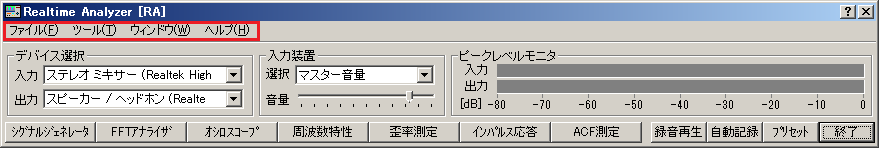

DSSF3 > RA > リファレンス > メインウィンドウ

| メニュー | 項目 | 説明 |
|---|---|---|
| ファイル（F) | アプリケーションの終了（X) | RAを終了します。 |
| ツール（T) | 設定（S) | 各測定画面のフォントサイズ、ウインドウサイズを設定します。→設定方法 |
| ウインドウ（W) | シグナルジェネレータ（S) | シグナルジェネレータウィンドウを開きます。すでに開いている場合は閉じます。 |
| FFTアナライザ（F) | FFTアナライザウィンドウを開きます。すでに開いている場合は閉じます。 | |
| オシロスコープ（O) | オシロスコープウィンドウを開きます。すでに開いている場合は閉じます。 | |
| 周波数特性（E) | 周波数特性測定ウィンドウを開きます。すでに開いている場合は閉じます。 | |
| 歪率測定（D) | 歪率測定ウィンドウを開きます。すでに開いている場合は閉じます。 | |
| インパルス応答（I) | インパルス応答測定ウィンドウを開きます。すでに開いている場合は閉じます。 | |
| ACF測定（A) | ACF測定ウィンドウを開きます。すでに開いている場合は閉じます。 | |
| プリセット（P) | プリセット設定ウィンドウを開きます。 | |
| 録音再生（R) | 録音再生ウィンドウ（レコーダー）を開きます。すでに開いている場合は閉じます。 | |
| 現在時刻（T) |
現在時刻表示を開きます。すでに開いている場合は閉じます。 ハードコピー(画像を印刷、記録）するときに、画面上の好きな位置において行うと年月日時分秒が記録できます。 |
|
| ヘルプ（H) | バージョン情報（V) | バージョン情報を表示します。 |
| お読みください（R） | READMEファイルを開きます。 | |
| ライセンス登録（L) | ユーザー登録画面を開きます。 | |
| YmecStoreで購入（Y) | ライセンス購入ページを開きます。(インターネットに接続している場合のみ可能です） | |
| オンラインマニュアル（A） | オンラインマニュアルを開きます。(インターネットに接続している場合のみ可能です） | |
| 技術サポート（S) | 技術サポートページを開きます。(インターネットに接続している場合のみ可能です） | |
| ドキュメントQ＆A（Q) | Q&Aのページを開きます。(インターネットに接続している場合のみ可能です） | |
| オンラインアップデート（U)) | オンラインアップデートを実行します。(インターネットに接続している場合のみ可能です） |
※項目名の後のアルファベット(_)はキーボードショートカットを表します。
DSSF3 > RA > リファレンス > メインウィンドウ